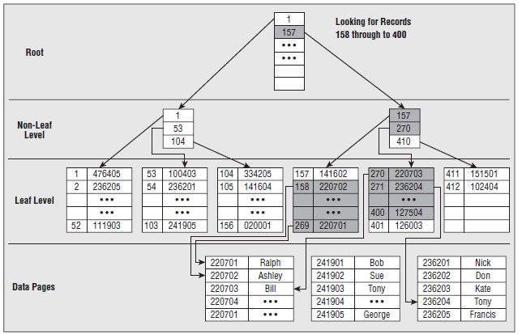

聚簇索引和非聚簇索引
数据库索引好比是一本书前面的目录，能加快数据库的查询速度。索引分为聚簇索引和非聚簇索引两种， 聚簇索引 是按照数据存放的物理位置为顺序的，而非聚簇索引就不一样了；聚簇索引能提高多行检索的速度， 而非聚簇索引对于单行的检索很快。
聚簇索引
表数据按照索引的顺序来存储的，也就是说索引项的顺序与表中记录的物理顺序一致。 对于聚集索引，叶子结点即存储了真实的数据行，不再有另外单独的数据页。 在一张表上最多只能创建一个聚集索引，因为真实数据的物理顺序只能有一种。

从图中可以看到叶子结点即存储了真实的数据行，索引页的开销较大。通过索引，我们可以查找到某一数据块，从而找到想要的数据，极大的提高了查询效率。使用聚簇索引取出范围数据较快，但是对于经常更新的列，使用聚簇索引会降低效率，因为每次更新需要重新排序数据表。
非聚簇索引
表数据存储顺序与索引顺序无关。对于非聚集索引，叶结点包含索引字段值及指向数据页数据行的逻辑指针， 其行数量与数据表行数据量一致。


可以看到叶子节点只是储存了一个指向数据的指针，并没有直接存储数据，所以储存开销较少。通过索引，我们可以查找到的是一个指向某行数据的指针，从图上看出它标识了数据Martin的具体位置706页04个。使用非聚簇索引，对于频繁更新的列，效率要高于聚簇索引，因为更新操作只需要更新指向新数据的指针。而对于范围查询，需要去数据表中的不同部分查询数据，所以取出某一范围内的数据效率要低于聚簇索引。
比较
最通俗的解释是:聚簇索引的顺序就是数据的物理存储顺序，而对非聚簇索引的索引顺序与数据物理排列顺序无关。 举例来说，你翻到新华字典的汉字“爬”那一页就是P开头的部分，这就是物理存储顺序（聚簇索引）； 而不用你到目录，找到汉字“爬”所在的页码，然后根据页码找到这个字（非聚簇索引）。
| 动作 |
使用聚簇索引 |
使用非聚簇索引 |
| 列经常被分组排序 |
应 |
应 |
| 返回某范围内的数据 |
应 |
不应 |
| 一个或极少不同值 |
不应 |
不应 |
| 小数目的不同值 |
应 |
不应 |
| 大数目的不同值 |
不应 |
应 |
| 频繁更新的列 |
不应 |
应 |
| 外键列 |
应 |
应 |
| 主键列 |
应 |
应 |
| 频繁修改索引列 |
不应 |
应 |